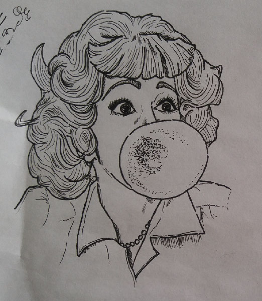
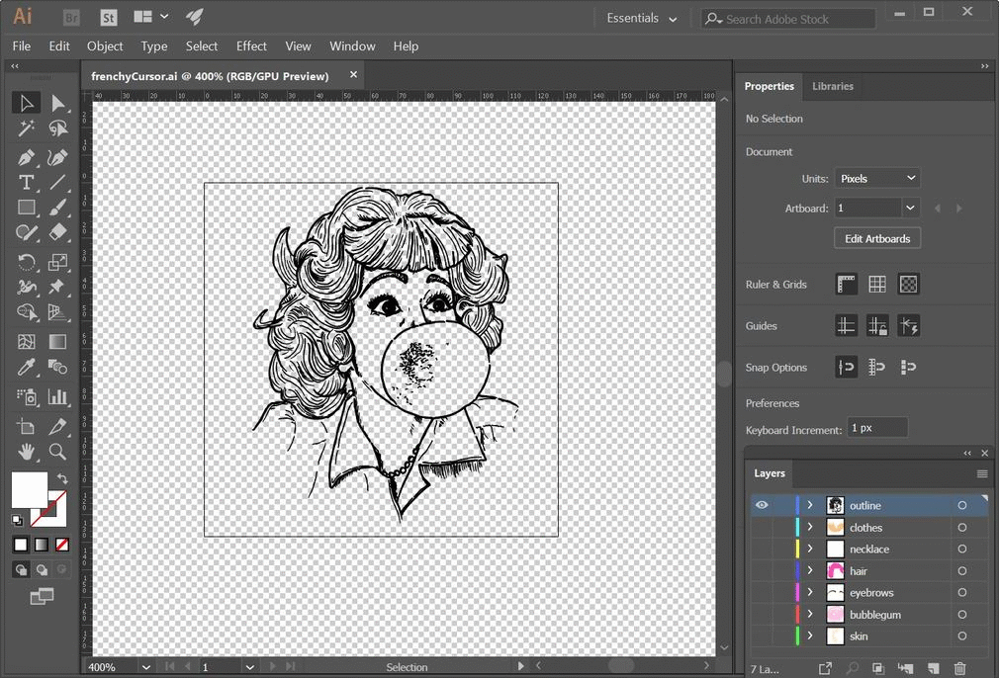
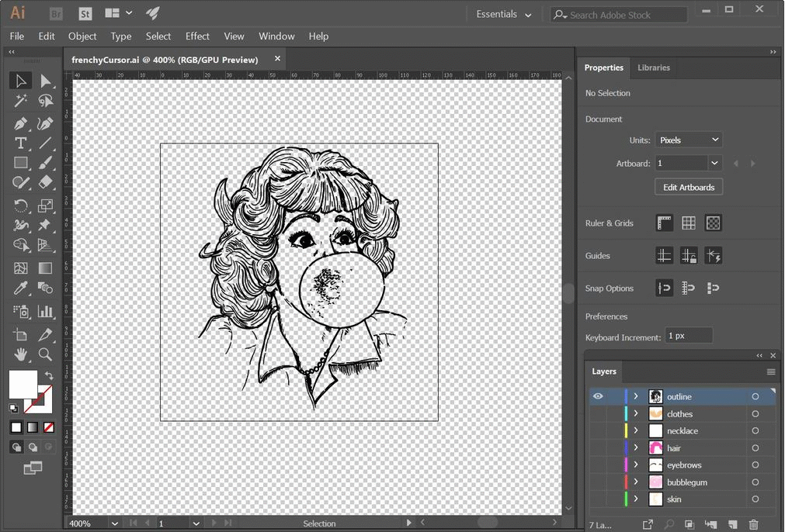

step one
Draw your cursor on pen and paper and scan or upload a photo of it.
step two
Open up in Adobe Illustrator and make a new document. Maximum height and width 128x128px. Place (shift + ctrl + p) your image onto your artboard.

step three
Use Image Trace > Sketched Art to create a vector outline, then add color using the pen tool and layers.
 

step four
Save your file as a png or svg. Go to File > Export > Export As ... Make sure you save it in your project's assets folder.

step five
Now your cursor is ready to use! In your CSS file, use the "cursor" property to add your custom cursor image.